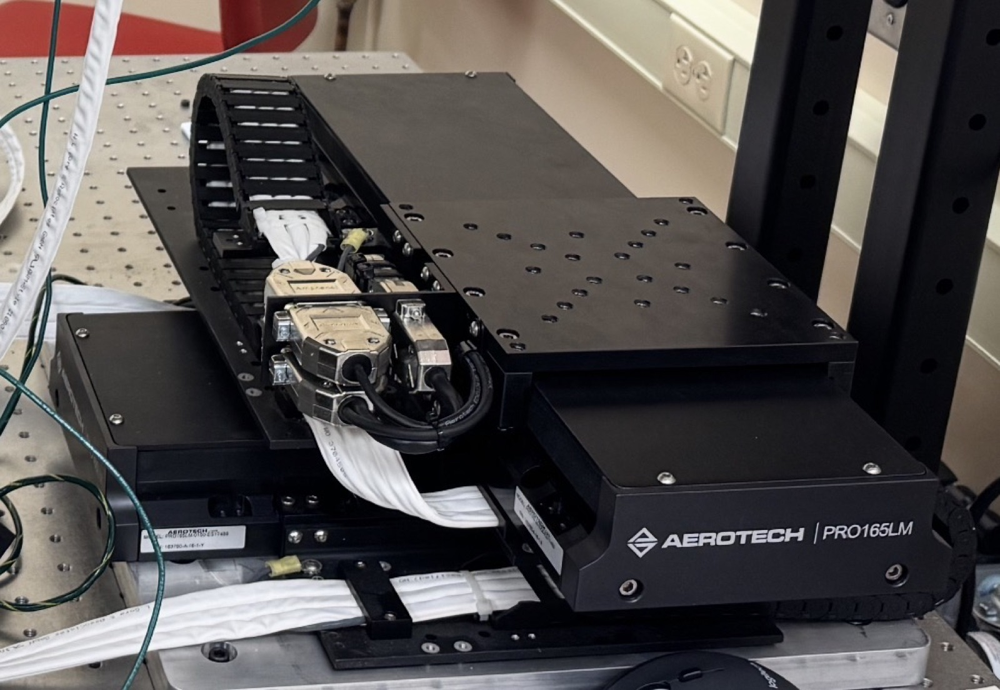

Precision Linear Stage Control
This project began with wiring a dual-axis precision linear stage, pairing servo amplifiers with feedback encoders and routing the signal cabling for clean, low-noise operation. From there, I ran a data collection campaign to characterize the system's Bode plots, which were used to design and tune the feedback control loop. Building on that model, I implemented data-driven feedforward tuning (IFT) by measuring the closed-loop frequency response, fitting a transfer function model, and solving for feedforward gains from measured tracking error using FFT-based convolution and least squares. The result was deployed on an NI cRIO through LabVIEW.
Testing showed the feedforward was applied correctly but had limited effect. The remaining tracking error, peaking near ±60 µm, was dominated by high-frequency vibration during acceleration rather than smooth tracking lag, which a linear feedforward cannot cancel. The fitted gains also pointed to a position-dependent force from the stage's cabling. These results showed that further gains would require a feedforward model that captures the stage's nonlinear behavior.
Building on this work, I am using the frequency response, friction, and tracking error data already collected to design a new, data-rich training trajectory for the stage. This extends my lab's one-shot nonlinear feedforward method, where iterative learning control is first run on a training trajectory to converge to a near-perfect feedforward signal, and a compact, physically interpretable model with inertia, friction, and cable hysteresis terms is then fit to that signal in one step. Since a single trajectory can only identify the effects it excites, the new trajectory is built to cover a range of strokes, speeds, accelerations, direction reversals, and dwell periods that expose the bearing friction and cable hysteresis limiting tracking. The goal is a feedforward controller identified from one well-designed trajectory that generalizes to motions the stage has never been trained on.
